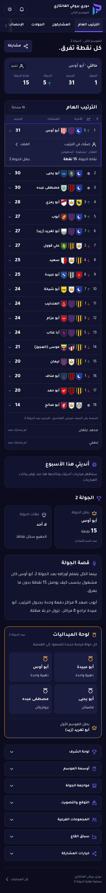
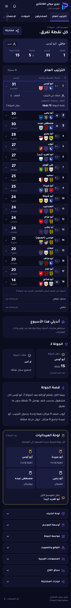
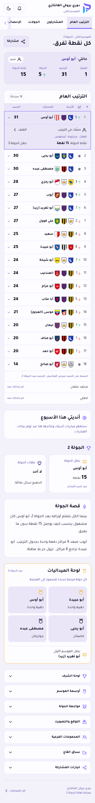
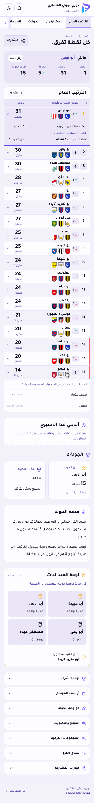

الترتيب: المعتمد ومقترح v2
مقترح للمراجعة فقط. لم يتغير الموك أب المعتمد. الاسم والأندية في كتلة واحدة، والحركة في شريحة، والفارق تحت الرصيد.
فتح المقترح الداكن · فتح المقترح الفاتحالوضع الداكن


الوضع الفاتح

